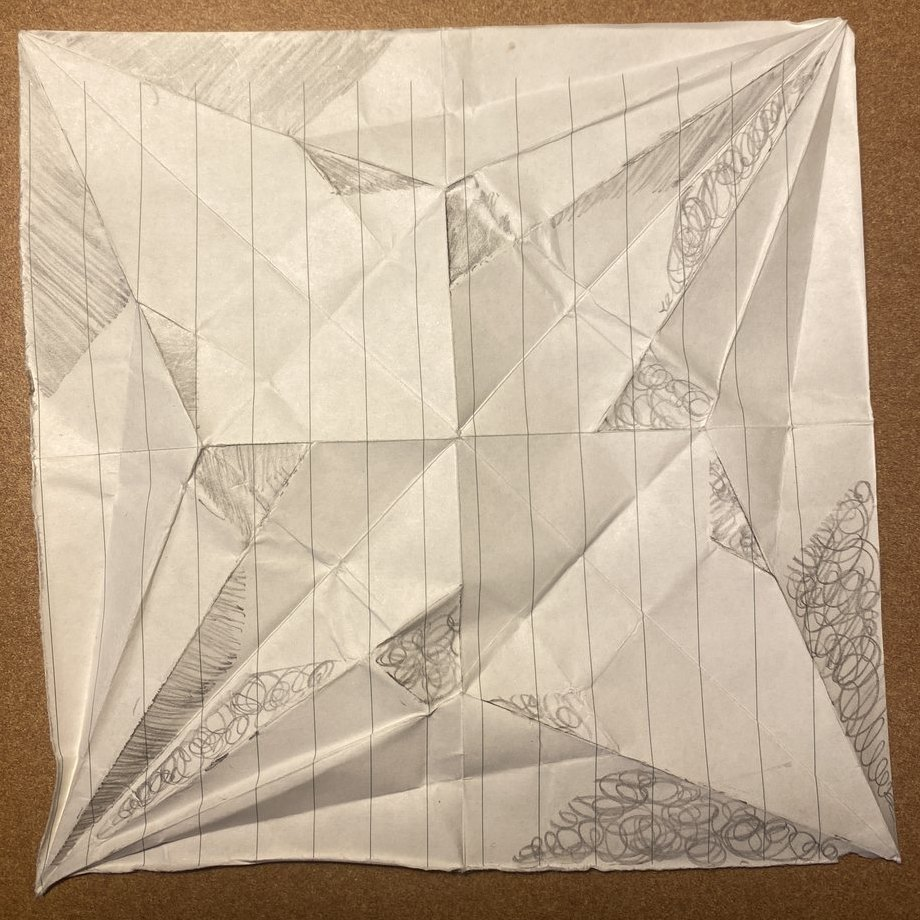
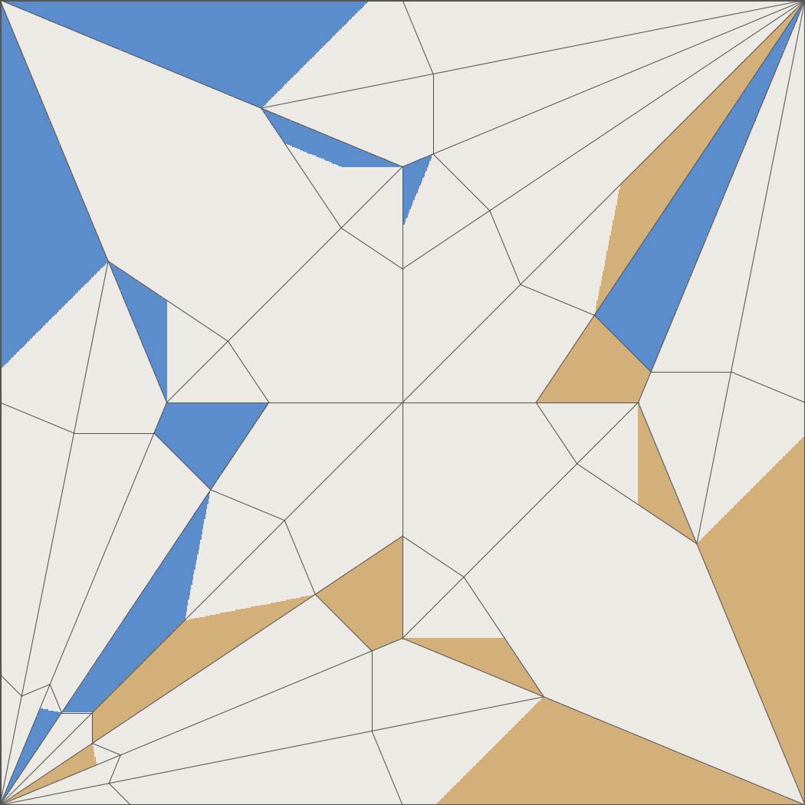
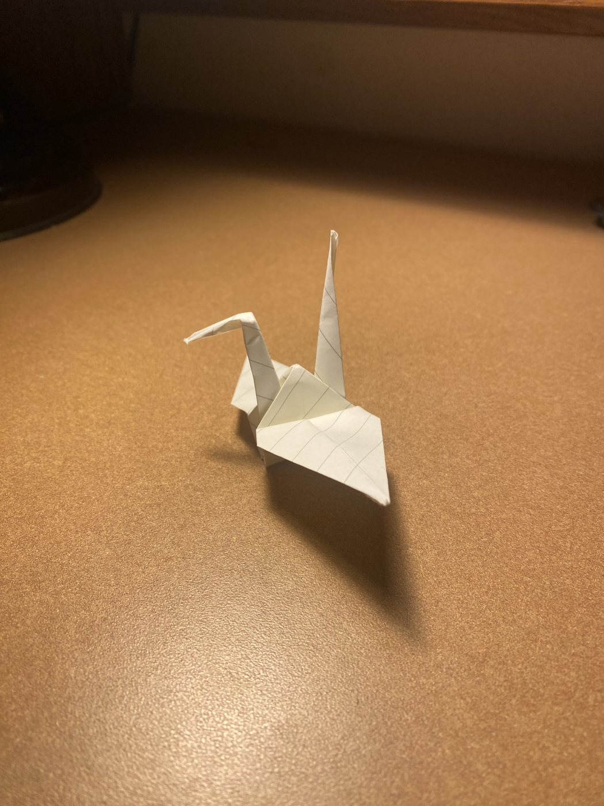
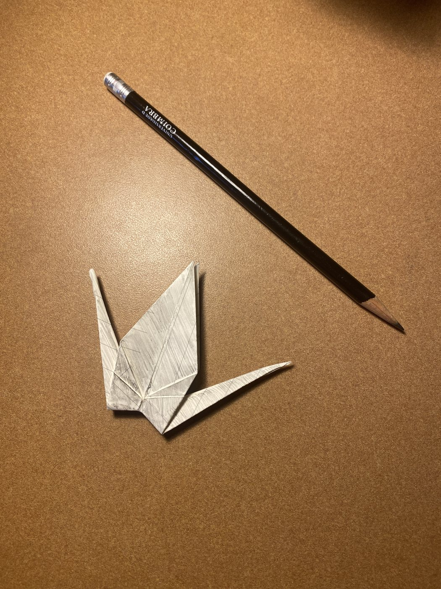
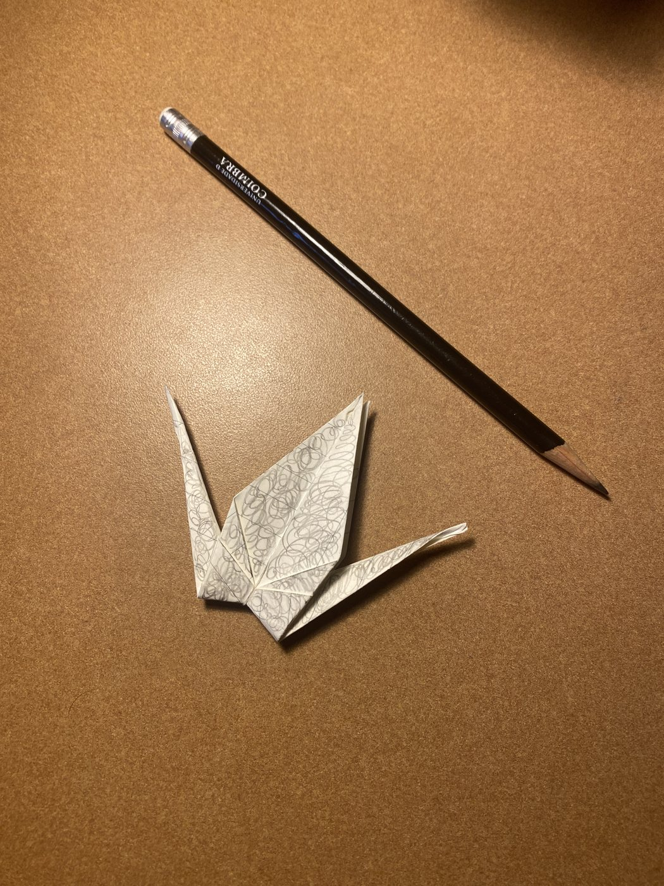

Fold map
When you fold a crane, most of the paper ends up tucked inside. I wanted to predict exactly which parts of the square stay visible, from the crease pattern alone, and then check the prediction with a real crane and a pencil.





How it works
A crease pattern is the map of fold lines on the unfolded square. Working out where each piece of paper lands after folding is easy: every crease is a reflection. The hard part is the stacking. Where several layers pile up, which one is on top? That's what decides what you see, and in general it's a famously hard problem.
For that I used Flat-Folder, Jason Ku's solver, which finds every valid way the layers can stack. For the traditional crane it finds 5. I wrote a script that takes its answer and, for every point on the square, checks whether that point ends up as the outermost layer on either face of the folded crane. About a quarter of the paper does. The rest is hidden inside.
This is a first step toward a computer vision class project: if I know exactly where each visible bit of the folded model comes from on the sheet, I can print images on paper that only come together once it's folded, or hide things in the parts no one sees.